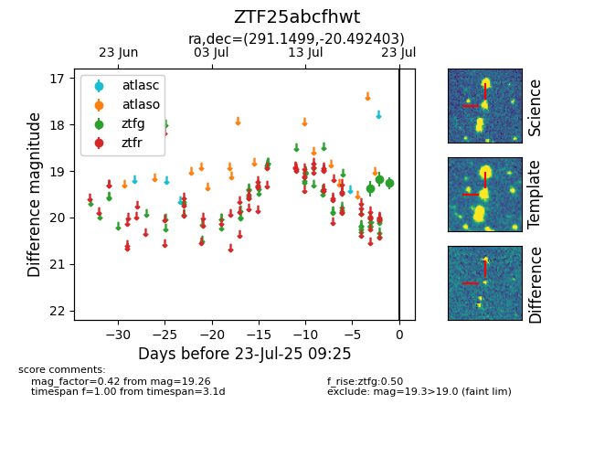

Target ZTF25abcfhwt at 2025-07-23 12:37, see:
FINK: fink-portal.org/ZTF25abcfhwt
Lasair: lasair-ztf.lsst.ac.uk/objects/ZTF25abcfhwt
ALeRCE: alerce.online/object/ZTF25abcfhwt
alt names
ZTF25abcfhwt (ztf,fink)
coordinates:
equatorial (ra, dec) = (291.1499,-20.49240)
galactic (l, b) = (17.8390,-16.25061)
photometry
last ztfg=19.26
3 ztfg detections
